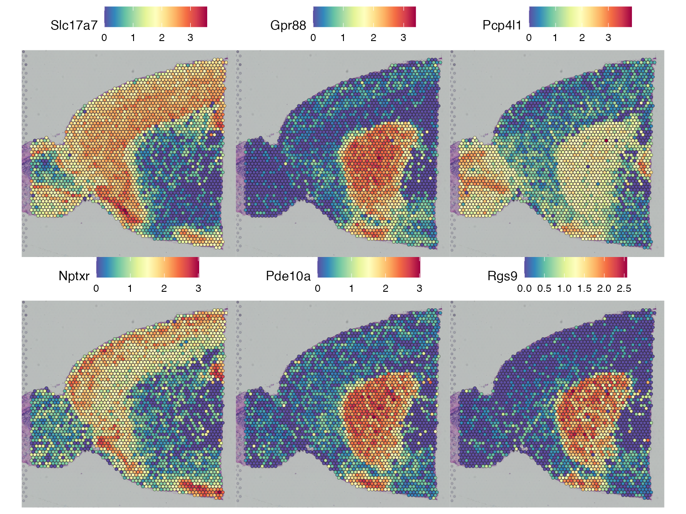

Analysis of spatial transcriptomics with singleCellHaystack
Diego Diez
2021-03-29
a04_example_spatial_transcriptomics.RmdWe can apply singleCellHaystack to spatial transcriptomics data as well. Here we use Seurat (v3.2 or higher) and the spatial transcriptomics data available in the SeuratData package. For this example we use 10x Genomics Visium platform brain data. For more details about analyzing spatial transcriptomics with Seurat take a look at their spatial transcriptomics vignette here.
Preparing input data
We focus on the anterior1 slice.
if (!"stxBrain" %in% SeuratData::InstalledData()[["Dataset"]]) {
SeuratData::InstallData("stxBrain")
}
anterior1 <- LoadData("stxBrain", type = "anterior1")
anterior1## An object of class Seurat
## 31053 features across 2696 samples within 1 assay
## Active assay: Spatial (31053 features, 0 variable features)We filter genes with less 10 cells with non-zero counts. This reduces the computational time by eliminating very lowly expressed genes.
counts <- GetAssayData(anterior1, slot = "counts")
sel.ok <- Matrix::rowSums(counts > 1) > 10
anterior1 <- anterior1[sel.ok, ]
anterior1## An object of class Seurat
## 12382 features across 2696 samples within 1 assay
## Active assay: Spatial (12382 features, 0 variable features)We can plot the total number of counts per bead, superimposed on the image of the brain.
SpatialFeaturePlot(anterior1, features = "nCount_Spatial")
We normalize the data we use log normalization.
anterior1 <- NormalizeData(anterior1)
Running haystack on the spatial coordinates
At the moment there is no direct interface to apply haystack on spatial transcriptomics in Seurat. Once this version of Seurat is released we will add it. For now, we can obtain the two pieces of information required. One is the normalized counts and the other is the spatial coordinates. Then we pass to haystack_2D the coordinates of the beads and the detection matrix. Here we use a naive approach an define detected genes as those having non-zero counts.
coord <- GetTissueCoordinates(anterior1, "anterior1")
counts <- GetAssayData(anterior1, slot = "data")
res <- haystack_2D(coord$imagecol, coord$imagerow, detection = as.matrix(counts > 1))We can check the top genes with spatial biased distribution.
sum <- show_result_haystack(res)
head(sum, n = 20)## D_KL log.p.vals log.p.adj T.counts
## Slc17a7 0.7824319 -109.11039 -105.01760 1747
## Gpr88 0.9001888 -102.42973 -98.33694 748
## Pcp4l1 0.5545418 -99.91394 -95.82115 1397
## Nptxr 0.5639389 -99.26959 -95.17680 1321
## Pde10a 0.9010192 -99.20667 -95.11388 676
## Rgs9 1.0326093 -97.85555 -93.76276 590
## Penk 0.5558575 -97.71955 -93.62676 1291
## Tac1 0.7930455 -97.03810 -92.94531 769
## Lingo1 0.5455927 -96.62946 -92.53667 1284
## 3110035E14Rik 0.7236017 -94.49888 -90.40609 859
## Gng7 0.8888954 -93.83745 -89.74466 617
## Scn4b 0.9227326 -93.33386 -89.24107 596
## Cck 0.7235658 -91.90506 -87.81227 1955
## Ppp1r1b 0.5265363 -91.85167 -87.75888 1197
## Mobp 0.5411625 -91.42394 -87.33115 1750
## Stx1a 0.6118020 -90.73332 -86.64053 1002
## Adcy1 0.6142605 -90.04311 -85.95032 976
## Enc1 0.4797198 -89.91781 -85.82502 1653
## Hpca 0.5644309 -89.47208 -85.37929 1823
## Rasd2 0.7424966 -89.11496 -85.02217 659And we can visualize the expression of the 6 top-scoring genes in the spatial plot.
SpatialFeaturePlot(anterior1, features = rownames(sum)[1:6])